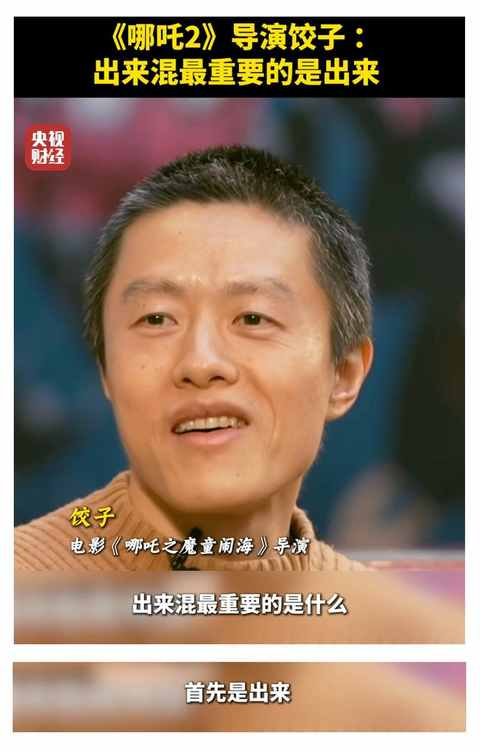
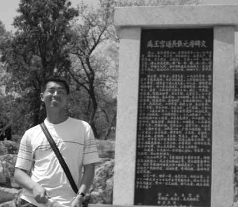
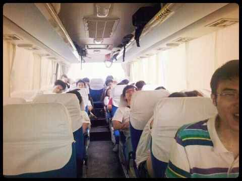

90 年，35 岁，农村大专生，毕业 13年：主动的 i 人运气不会太差
一、引子
这是一个一直想聊，但始终没有下定决心聊的话题。也很正常，要聊关于自己的内容总是不容易的。
这次，一定得聊聊了，因为有亲戚在 9 月份要入学 大专，开始一段崭新的旅程，而这 3 年的求学和以往的学生生涯会有大不同。

二、 上大专是游戏重开
我与很多人不同的是：
- 虽心态不错，但连续三年参加高考均落榜
- 是遵守校纪班规的老实人孩子+学渣
- 配合度不错， 不懒也不努力的 i 人
虽然种种情况都指向我这辈子可能就定型了，大专毕业之后再找个厂里的工作，然后再不同的工厂里面兜兜转转。
但我压根没想这些，我想到的是在 2009 年的暑假已经有不少同学大专第三年都开始实习工作了。
现在我和他们一样上大专了还生生迟了两年，我不愿落后与同龄人的好胜心就被激发起来了，拿到通知书之后，就暗暗敲定了自己的主线任务：
把失去的两年时间抢回来！
命运的齿轮可能在那个时刻被拨动。
从现在的视角和时间点会看，越来越觉得高考是某种自然选择的方式。
存在发生一些小概率事件的可能（超常或失常发挥），但 99.99% 体现的就是在应试教育模式下的真实水平。
上大专和上本科在本质上完全是一样的，都是翻开一个新的篇章，进入到新的规则体系。约等于游戏重开，谁笑到最后，尚未可知！
三、做主动的 i 人
入学之后，我做了下面这些事情：
- 积极参加班级活动：
- 竞选班干：
- 参加学生会选拔：
对于当时的我：一个老实的农村娃而言，除了第一项积极参加班级活动之前的另外两件事，都是我此生没有做过的！
主动的魔力在于，有太多事情是不主动就会和自己毫无关联，即便是很随机的运气也是如此，想中大奖至少要先买一张彩票。
正如 饺子导演在《哪吒之魔童降世》接受央视记者采访时说的：“出来混最重要的是什么，首先是出来！ ”

四、事在人为
① 尽职尽责的 习惯养成
虽然莫名其妙成了学习委员，但必须要尽职尽责地完成自己的工作。
女生提交作业的积极性和配合度领先男生几百条街，难点是男生寝室的部分同学，不想写也不想交作业。
我的做法是：
挨个寝室催作业，不想写也不愿交的同学我直接把自己写好的拿给他们抄，在饭都递到嘴边的时候，他们也会快速把写好的作业交给我。
然后我整理好交给老师，大多数时候，作业都是齐齐整整的，一份都没少。
不只是这些：
- 上课坐第一排：即使很困的午后第一节课
- 课后与老师尬聊：珍惜与老师同路的 5 分钟
- 积极参与学校活动：觉得能参加的都试试看
- ……
在大一的上半学年， 做了 一个学期学习委员之后的学期末，班干部调整，我全票当选为班长。同学们的眼睛是雪亮的，认真做事的人更容易被看到。
② 把事情做成很重要
由于太年轻，对很多事情缺少敬畏和认识，再叠加一些不知道从哪里来的自信。
从而有了一个笃定的判断：某件事，如果别人可以，那我大概率也行。

现在印象深刻的是在实习期间策划的活动：毕业旅行。
当时微博很流行，在毕业季各种关于毕业旅行的信息层出不穷，与在校截然不同的是，整个活动策划的大部分都必须要在线上完成：
1）确定每个环节的时间节点
2）定制 T 恤，敲定设计人员
3）QQ 群高频互动，鼓励同学自愿报名
4）联系导游说明需求，商定路线、方案、费用
最终加我一起 24 个人成团，在领取毕业证第二天一早出发。

感谢这 23 位同学对我的信任与支持，也希望这次毕业旅行是一段美好的回忆。
五、主动的人运气不会差
每个人都有特定的限制条件， 作为 i 人，很难和所有人打成一片，也几乎成为不了社交达人。
但这些限制条件并不会影响到我想把某些事情做成，主动出击，通过我能想到的所有方式。限制条件是客观因素，而太多事情是主观因素占主导。
主动了之后，运气不会差的主要原因就是：越主动越能掌握主动权，同时也能锻炼各种能力。
在目标的支撑下，也能激发潜能，越挫越挫勇。